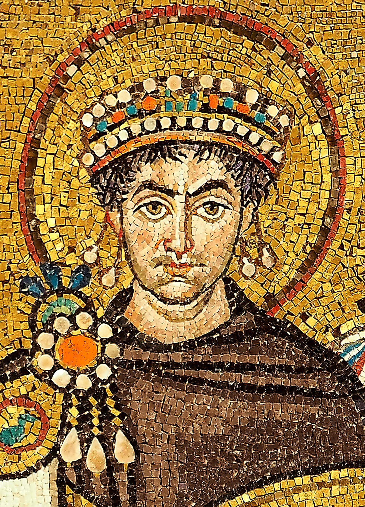
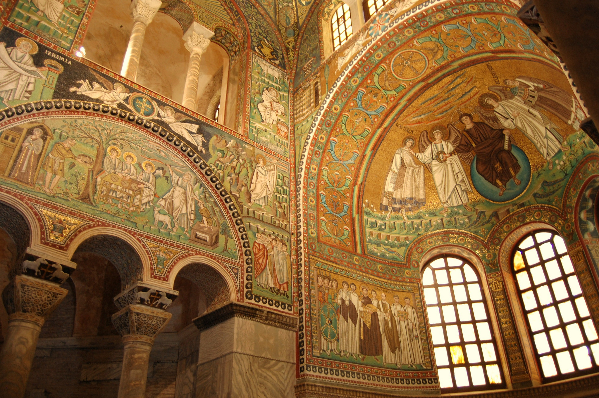

L'Architettura e lo Spazio Luminoso
Nella Basilica di San Vitale a Ravenna, la luce non è un semplice elemento atmosferico, ma il principio fondamentale attorno a cui si strutturano l'architettura, la teologia paleocristiana e la conservazione del patrimonio artistico. L'edificio presenta un forte contrasto visivo: se l'esterno in mattoni rossi appare severo, semplice ed essenziale, l'interno rivela uno spazio articolato e luminoso, dove la luce naturale penetra dalle ampie finestre della struttura ottagonale per diffondersi sulle esedre, sul deambulatorio e sulla cupola, smaterializzando la percezione della massa muraria.

I Mosaici Bizantini, la Lux Nova e la Sacralità del Potere
Nelle celebri decorazioni musive dell'abside e del presbiterio — tra cui spiccano i ritratti ufficiali dell'imperatore Giustiniano e dell'imperatrice Teodora — la luce assume una profonda valenza teologica (Lux Nova). Nei mosaici bizantini, l'uso delle tessere dorate e colorate azzera la profondità spaziale e la prospettiva terrestre.
Grazie alla disposizione volutamente inclinata ed irregolare delle tessere vitree, la luce naturale viene rifratta in molteplici direzioni, creando un bagliore diffuso che avvolge le figure umane e le proietta in un'atmosfera astratta, sacra ed eterna. Questa rifrazione luminosa non ha solo una funzione spirituale, ma serve anche a celebrare il potere politico: la luce riflessa fa risplendere i dettagli delle vesti di porpora, i gioielli e le corone imperiali, sottolineando la legittimazione divina dell'autorità di Giustiniano e Teodora.

Il Restauro Illuminotecnico e la Conservazione Preventiva
In epoca contemporanea, l'esperienza visiva e la comprensione di questa "luce divina" sono state rinnovate attraverso un rigoroso intervento di restauro illuminotecnico curato da DZ Engineering. Il progetto di revamping ha sostituito le vecchie tecnologie con un impianto a LED di ultima generazione, studiato per garantire un'illuminazione omogenea e ad alta resa cromatica. La nuova luce artificiale valorizza la tridimensionalità dell'architettura e la lucentezza delle tessere musive senza creare abbagliamenti o alterazioni dei colori originali.
Inoltre, l'impianto è stato progettato nel pieno rispetto dei criteri di conservazione preventiva (norma UNI 10829:1999): controllando rigorosamente l'emissione elettromagnetica e l'apporto termico per prevenire il deterioramento dei pigmenti e dei materiali storici, la tecnologia moderna riesce a bilanciare la fruizione estetica dei visitatori con la tutela a lungo termine di questo patrimonio UNESCO.